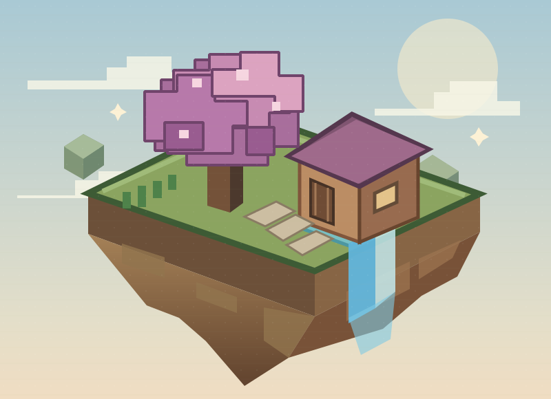

✣ PLUMYA SKYBLOCK
OYUNCU EL KİTABI · SAYI 01Plumya Wiki'ye
Plumya Wiki'ye
hoş geldin!
Bir adadan koca bir dünyaya… Skyblock'ta merak ettiğin her sistemin rehberi burada. Adanı kur, üretimini geliştir, zindanlara hazırlan.
✶ Yolculuk ilk blokla başlar.
PLUMYA DÜNYASINDAN01 / KÜTÜPHANE
Aradığın bilgi, bir sayfa uzağında.Hızlı erişim
02 / SKYBLOCK
Rehberi aç ↗Oyuncu yolculuğu
- 01Adanı kur/is create
- 02Kitini al/kits
- 03Kaynak toplaÜretim ve madencilik
- 04Adanı geliştirYükseltmeler
- 05Maceraya çıkZindanlar